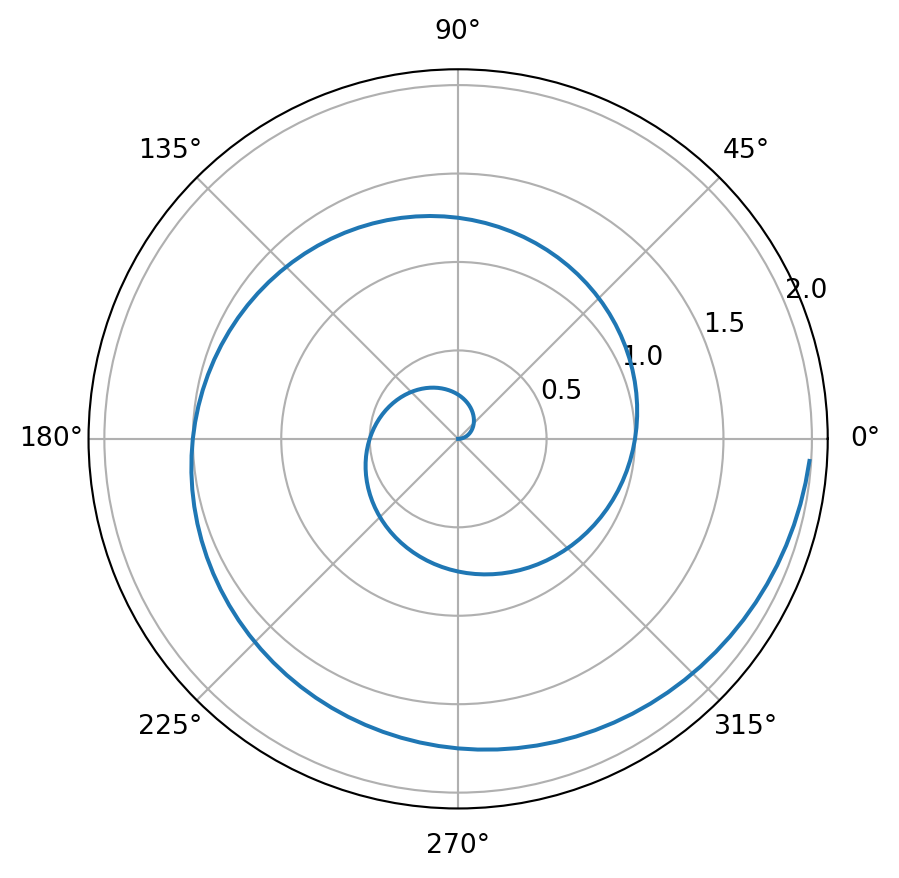

array([0, 1, 2, 3, 4, 5, 6, 7, 8, 9])To Explain or to Predict?
Discussion of research paper by Galit Shmueli
Introduction
About Galit Shmueli
- 46 y/o, Dr. Galit Shmueli is a Chair Professor at the National Tsing Hua University in Taiwan.
- Authored many influential works in predictive analytics, data mining, and business analytics.
- “To Explain or to Predict?” is Shmueli’s most cited work, 3,679 times.
Purpose of To Explain or to Predict
- Tackling the distinction between explanatory and predictive modelling in Statistics.
- Lack of this distinction creates multiple problems within different disciplines.
- Gap between academia and practice
- Finance, psychology, philosophy
Background
Explanatory Modeling
- Explaining: Causal explanation
- Explanatory modeling: Use of statistical models for testing causal explanations
- In practice: association-based models are applied to observational data
- Most common: Regression model
- Justification: Theory itself provides the causality
Predictive Modeling
- Predictive Modeling: the process of applying a statistical model or data mining algorithm to data for the purpose of predicting new or future observations.
- Shmueli focuses on “nonstochastic prediction” - the goal being to predict output value for new observations given their input values.
Descriptive Modeling
- Descriptive Modeling: aimed at summarizing or representing the data structure in a compact manner
- Absent or less incorporated causal theory
- Regression:
- Can be descriptive if used for capturing the association between dependent and independent variables
- Not descriptive if purpose is causal inference or prediction
Why they are different
Cause
- Theory:
- Suppose a theory that construct X causes construct Y via function F
- Statistical model, f, defined as E(Y) = f(X)
- Explanatory modeling attempts to match f and F as closely as possible
- Predictive modeling attempts to utilize X, Y, and model f to generate good predictions of Y
Effect - Causation Association
- Causation-Association:
- Explanatory: Model f represents an underlying causal function, X is assumed to cause Y.
- Predictive: Model f captures assocation between X and Y. ## Effect - Theory-Data
- Theory-Data:
- Explanatory: Model f is constructed based on F in a way that supports the interpretation of the relationship between X, Y, and testing the causal hypotheses.
- Predictive: Model f is constructed from the data. Interpretability of the relationship between X & Y are not required, sometimes desired for transparency. ## Effect - Retrospective-Prospective:
- Retrospective-Prospective:
- Explanatory: Retrospective, model f is used to test an existing set of hypotheses.
- Predictive: Prospective, model f is constructed for new observations. ## Effect - Bias-Variance:
- Explanatory: Focus is on minimizing bias to obtain the most accurate representation of the theory.
- Predictive:
- Focus is on minimizing bias and estimation variance. May occasionally sacrifice accuracy for empirical precision.
- “Wrong” model may predict better than the “correct” one.
Statistical Modeling Differences
Study Design and Data Collection
- Explanatory:
- Smaller n, just enough to reduce bias
- Increase in number of groups in hierarchial data
- Clean, experimental data
- Valid, reliable data collection tool, accurately reflecting studied concepts
- Factorial designs
- Prediction:
- Larger n
- Increase in size of group in hierarchial data
- Observational data, avoiding “overly clean”
- Measurement quality & meaning to the predicting variable
Data Preparation
- Explanatory:
- Partitioning is less common, i.e. test sets, because of the reduction in statistical power.
- When used, can be useful for model validity.
- Partitioning is less common, i.e. test sets, because of the reduction in statistical power.
- Predictive:
- Data partitioning has become a standard preprocessing step.
- Missing values:
- Depends on the relationship between the missingness and dependent variable.
- In cases of financial fraud, missingness can be a blessing in disguise.
- Estimate multiple reduced models, creating different models for different observations.
- Depends on the relationship between the missingness and dependent variable.
Exploratory Data Analysis
- Explanatory:
- EDA is geared toward specified causal relationships.
- Search for numerical summaries of the theoretical relationships.
- Predictive:
- Capturing potentially unknown relationships.
- Explore a large number of numerical summaries seeking unknown relationships.
- Reduction in the number of variables reduces sampling variance. ## Choice of Variables
- Explanatory:
- Goal is to understand causal relationships by using variables represented in the theoretical constructs
- Variables may be chosen based on the role of the variables based on different fields.
- Hard to avoid bias, solutions include 2SLS.
Predictive:
Choice of Methods
Validation, Evaluation, Selection
Model Use and Reporting
Specifications for date and author can also be added.
Revealjs Options
slide-number: display the slide number on each slidepreview-links: open links in an overlay on the slidetheme: configure the presentation themeincremental: items in lists appear individuallyfooter: include a footer at the bottom of each slide
Many other options can be used under revealjs to customize a presentation.
YAML Example
---
title: "Creating Presentations with Quarto"
subtitle: "Introduction to Data Science | Fall 2024"
format:
revealjs:
slide-number: true
preview-links: true
theme: default
---This is a verbatim copy of the YAML code used in the Quarto file for this presentation!
Subsequent Slides
- To create a section slide, use a single
#followed by the slide’s title. - To create a regular slide, use a double
##followed by the slide’s title. Then, use markdown syntax to add content to the slide after the title line.
The title slide does not need to be added in this way; it is created and included automatically based on the information in the YAML code block!
Slides Example
Slide Content
Code Blocks
- It may be useful to display blocks of code in a slide.
- Open a code block with at least three
```followed by the language of the code. - Close a code block with the same number of
```as in the opening.
Code Block Example
For example, the following code in the Quarto document
will yield the following output in the rendered slide.
Notice that this does not run the Python code; it simply displays the block of code in the slide.
Executable Code
To display the output of a code block in a slide, enclose the programming language inside {}. For example, the following code in the Quarto document
will yield the following output in the rendered slide.
Including a period inside {} before the programming language will display the code block instead of running it.
Images from Code Output
Executable code blocks can be used to display images in slides. Consider the following code example.
```{python}
#| fig-align: center
#| fig-cap: "A line plot on a polar axis"
import numpy as np
import matplotlib.pyplot as plt
r = np.arange(0, 2, 0.01)
theta = 2 * np.pi * r
fig, ax = plt.subplots(
subplot_kw = {'projection': 'polar'}
)
ax.plot(theta, r)
ax.set_rticks([0.5, 1, 1.5, 2])
ax.grid(True)
plt.show()
```Images from Code Output – Example
The preceding code example will create the following image.

Images from Files
It is also possible to insert an image from a saved file.

Images from Files – Markdown Syntax
To import a saved image for display in a slide, use the following markdown syntax as an example. This line of code may be used to display the image on the previous slide.
- The caption for the figure is enclosed inside
[]. - The file path for the saved image file is enclosed inside
().
Remember to use relative references, as opposed to absolute references, when specifying the file path!
Markdown Syntax for Links
To create a link, use the same markdown syntax as before, but omit the initial !.
- The text of the link is enclosed inside
[]. - The URL is enclosed inside
().
For example, use the following markdown syntax to obtain a link to the Quarto website.
Tables – Markdown Syntax
Refer to the Quarto documentation for a comprehensive explanation on the details of creating tables in markdown.
The basic syntax for a simple table is illustrated by the following example.
| Left | Center | Right |
|---|---|---|
| ABC | ABC | ABC |
| ABCD | ABCD | ABCD |
Mathematical Notation
- Use LaTeX to typeset mathematical notation.
- In-text math is enclosed with a single
$on each side. - Display math is enclosed with a double
$$on each side.
LaTeX Example
$$x = \frac{-b \pm \sqrt{b^2 - 4ac}}{2a}$$
The quadratic formula is given by the above equation.
This is used to find the solutions to the equation $ax^2 + bx + c = 0$.\[x = \frac{-b \pm \sqrt{b^2 - 4ac}}{2a}\] The quadratic formula is given by the above equation. This is used to find the solutions to the equation \(ax^2 + bx + c = 0\).
Slide Customization
Incremental Lists
- This slide contains an incremental list.
- Lists on specific slides can be configured to display incrementally.
- Alternatively, lists can display incrementally by default for the entire presentation.
- Additionally, incremental displays can be disabled on specific slides, when lists display incrementally by default.
Incremental Lists – Entire Presentation
By including the following under the revealjs options in the YAML block, bulleted and numbered lists will display incrementally by default.
Incremental Lists – Specific Slides
By enclosing a list’s code in a div, the display of the list can go against the default setting.
To make a list incremental:
To make a list non-incremental:
Div Containers
- The previous slide demonstrated how div containers may be used to override default settings.
- The next slide will demonstrate how they may be used to display content in multiple columns, as in the current slide.
- Divs are useful for adding various attributes to specific pieces of code.
- Furthermore, divs may be nested within each other.
- For more information on the syntax and application of div containers, refer to the Quarto documentation.
Multiple Columns
This framework, which makes use of nested divs, enables the display of multiple columns in a slide.
Avoiding Content Overflow: Introducing a Scroll Bar
- Be mindful of the amount of content on each slide.
- Render the presentation frequently to see if content overflow is present on any slides.
- If a slide overflows with content, consider separating it into more than one slide.
- If separating the content is not possible, it may be useful to introduce a scroll bar into the slide.
This can be accomplished by including {.scrollable} after the slide title, as shown in the following example.
If content overflow is a problem throughout the presentation, the scroll bar can be applied to all slides by including scrollable: true under revealjs in the YAML block.
Avoiding Content Overflow: Decreasing the Text Size
- Be mindful of the amount of content on each slide.
- Render the presentation frequently to see if content overflow is present on any slides.
- If a slide overflows with content, consider separating it into more than one slide.
- If separating the content is not possible, it may be useful to decrease the size of the text on the slide.
This can be accomplished by including {.smaller} after the slide title, as shown in the following example.
If content overflow is a problem throughout the presentation, the smaller text size can be applied to all slides by including smaller: true under revealjs in the YAML block.
Conclusion
Summary
This presentation has covered:
- Creating slides in a Revealjs presentation
- Adding various content to slides
- Basic ways to customize slides
It would be impossible to describe all the capabilities of Revealjs in one presentation. This presentation is meant to provide an introduction to the broad functionality of Revealjs.
Further Reading
For more information about creating Revealjs presentations:
For a useful guide on fundamental markdown syntax: